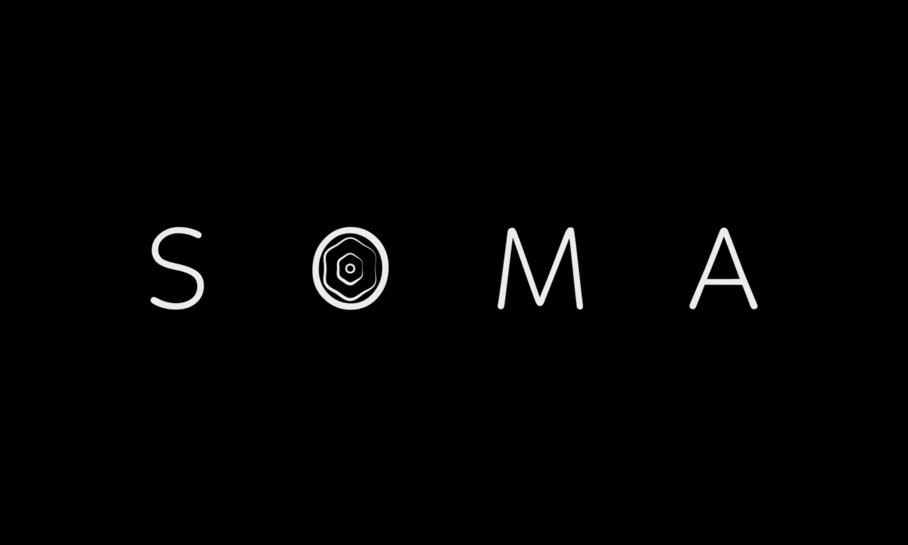
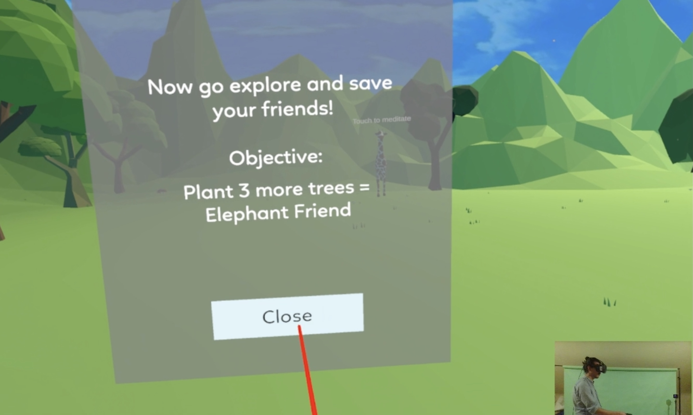
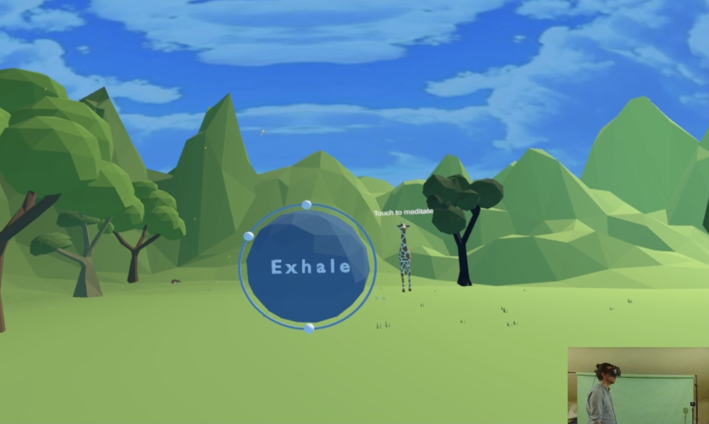
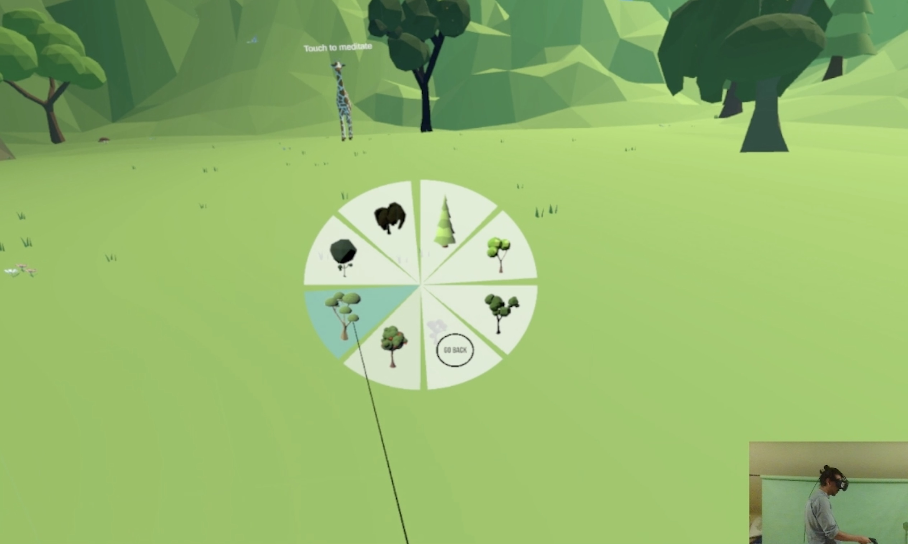
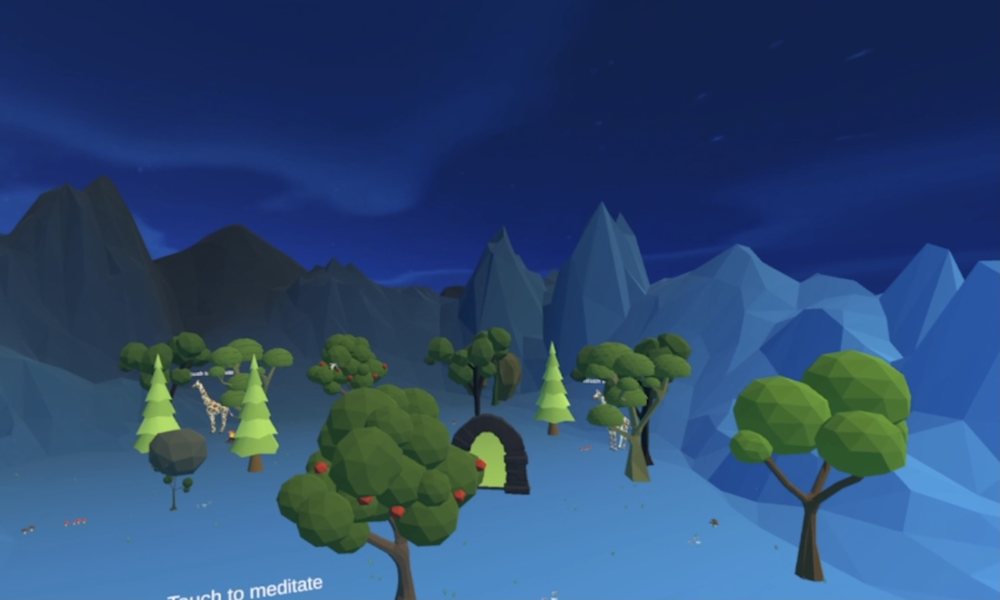
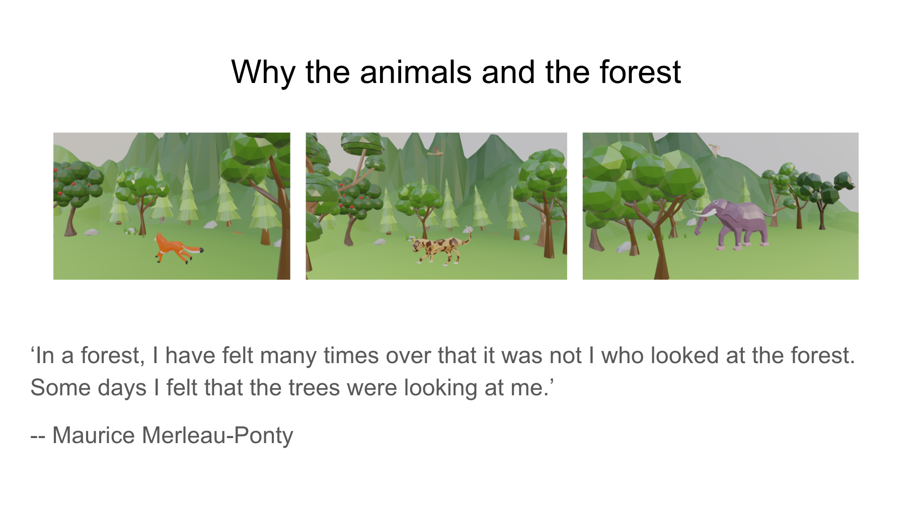
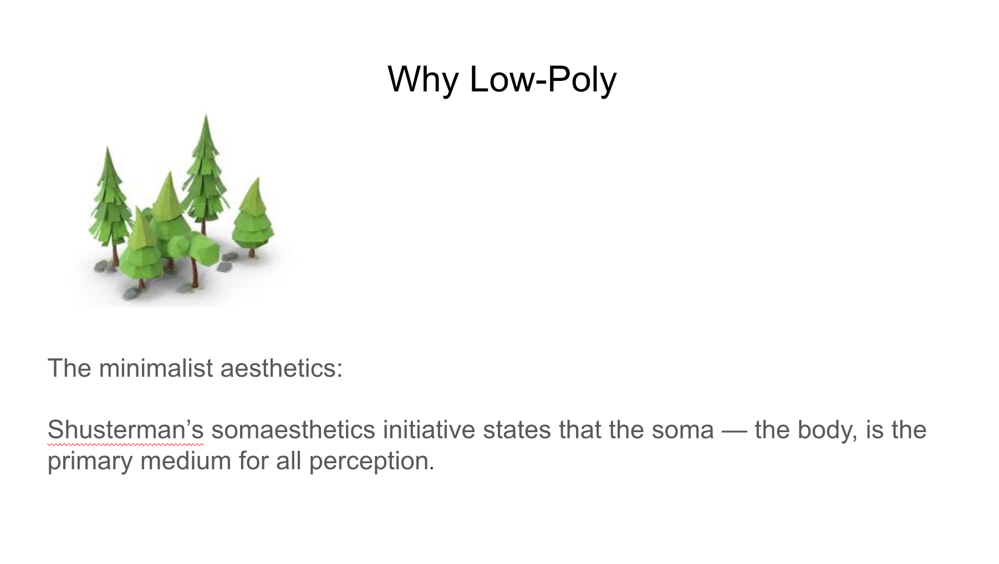
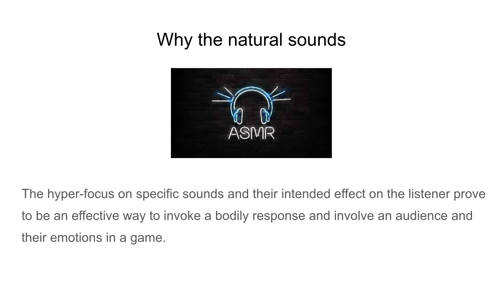

Welcome to SOMA





Soma is a VR sandbox game that focuses on mindfulness
Soma incorporates relaxing audio and physical responses such as breathing techniques
that bring awareness to the
user through an animated, interactive story within
an open-world sandbox game.
Project Obejectives
1. Mindfulness: Using VR to teach users about mindfulness - people who teach or do
mediation professinally or people
who seek to relax,
2. Guided: Using First-Person-Perspective (FFP) to guide the user to gradually move away from the
anxiety and negative thoughts in
life and engage with the world in a calm manner.
3. Interactive Narrative: Allowing user to explore in an open interactive world, and building a VR game with the interactive narrative.
My Input
Design and developed 3D objects and scenes based on Somaesthetics

The fox is the animal that leads the player to the scene, and as a tutor to the player. In popular cultures and films, a fox could be deemed to represent a familiar animal possessed of magic powers and intelligence.
It is a fusion from the Little Prince and Playne. The fox is the company of the player, as well as the player’s teacher. So we created the fox.
The other animals are fox’s friends in the forest. The player will be able to see them and interact with them in the peaceful and calm forest. One sustained argument for Somaesthetic design is the foundational role perception plays in our experience of the world.

The first reason is technical, as lowpoly models are comparatively easy to model and apply textures. It saves development time, and we can work on models more quickly
But also aesthetically, as low-poly objects favour abstraction, it fits well with the minimalist style, which Shusterman states about in the somaesthetics initiative that the alive and sentient body is the indispensable medium for all perception. Too much unnecessary details would interfere with the perception process.
Collaborated with sound designers to design and develop audio for the game

Incorporating audio into the meditative environment, such as the sound of wind, water, falling leaves, and trees growing that are inherent to the environment. It gives the user ‘ASMR’ experience, which offer an ‘inverse image of busy modern life, as it is quiet and meant to soothe.
Collaborated with 2D designer to conduct design iteration


Design iteration and User flow
Trailer
Team members:
Xilong Zhang- 3D Designer and Animator
Li Jingren - Lead Programmer
Reinaldo Bonet - UI/UX Designer
Qian Xinyuan - Asistant Programmer
Developed with Unity and SteamVR
Also in Game Development:

An interactive fiction about love and tragedy